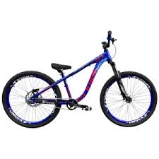
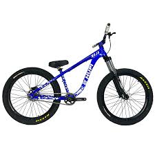
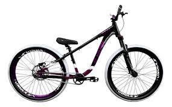
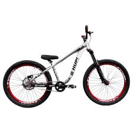

HUPI NAJA
Quanto custa?
| Valores: |
| À vista: |
Parcelada: |
| Minimo: |
Maximo: |
Minimo: |
Maximo: |
| 4.397,55$ |
7.983,30$ |
12x de 482,38$ |
12x de 665,28$ |
A Hupi Naja é boa?
A Hupi Naja é amplamente reconhecida no mercado como uma bicicleta que oferece um excelente equilíbrio entre qualidade, desempenho e preço, tornando-se uma opção muito atrativa para quem deseja investir em uma bike confiável sem abrir mão de um bom custo-benefício. Sua versatilidade é um dos principais destaques, pois o modelo atende tanto ciclistas iniciantes quanto aqueles com mais experiência que buscam uma bicicleta para uso urbano, passeios recreativos e até trilhas leves.
Um dos grandes pontos positivos da Hupi Naja está no seu quadro de alumínio, que alia leveza e resistência, proporcionando um bom desempenho sem comprometer a durabilidade. Essa estrutura robusta garante maior segurança para o ciclista, especialmente em terrenos variados, além de facilitar o transporte e a manobra da bicicleta. O design moderno e arrojado, com opções variadas de cores e acabamentos, também contribui para tornar a Naja uma escolha muito popular entre diferentes perfis de usuários.

No quesito componentes, a Hupi Naja surpreende pela qualidade dos itens que acompanham a bicicleta. Os freios a disco hidráulicos Shimano são um destaque à parte, pois oferecem uma frenagem precisa e eficiente, fundamental para garantir segurança em descidas e em situações que exigem paradas rápidas. Essa tecnologia de freio também se comporta muito bem em condições adversas, como chuva e lama, o que amplia a versatilidade da bicicleta.
A transmissão da Hupi Naja é outro aspecto que merece destaque. Com trocas de marcha suaves e precisas, ela facilita a adaptação do ciclista a diferentes tipos de terreno e inclinações, proporcionando maior conforto durante o pedal. Isso torna a bicicleta ideal para trajetos com variações de relevo, garantindo uma experiência agradável mesmo em percursos mais exigentes.
Além disso, a Hupi Naja apresenta uma geometria ergonômica que favorece a postura do ciclista, ajudando a reduzir o cansaço em trajetos mais longos. O selim e o guidão são projetados para oferecer conforto, contribuindo para que o usuário possa pedalar por horas sem desconforto.
Outro diferencial importante é a disponibilidade de versões e configurações variadas da Hupi Naja, o que permite que o ciclista escolha o modelo que melhor se adapta às suas necessidades, seja para uso diário na cidade, aventuras em trilhas ou mesmo para competições amadoras. Essa diversidade amplia o alcance da marca e faz com que a Naja seja uma bike bastante democrática.
Em termos de manutenção, a Hupi Naja apresenta uma boa facilidade, com componentes amplamente encontrados no mercado e suporte técnico acessível, o que facilita eventuais reparos e a troca de peças. Isso torna a experiência pós-compra mais tranquila e econômica.
Em resumo, a Hupi Naja é uma bicicleta que combina um conjunto equilibrado de atributos: estrutura resistente, componentes de qualidade, design atraente e preço competitivo. Para quem busca uma bike versátil, confiável e com bom desempenho, seja para deslocamentos urbanos, lazer ou trilhas leves, a Hupi Naja representa uma excelente escolha, capaz de atender às expectativas de uma ampla gama de ciclistas.
É usada em que área esportiva?
A bicicleta Hupi Naja é amplamente utilizada em modalidades do ciclismo urbano e esportivo, com destaque especial para o street, dirt jump, pump track e o wheelie (grau) .— práticas muito populares entre os ciclistas mais jovens e entusiastas de manobras. Ela foi desenvolvida para suportar impactos, realizar saltos, e proporcionar agilidade e controle em ambientes urbanos e pistas com obstáculos, por isso se tornou uma referência entre os praticantes dessas modalidades.
No street e no pump track, a Hupi Naja se destaca pela sua geometria agressiva e quadro resistente, que facilitam a execução de curvas rápidas, manobras em rampas e saltos em circuitos técnicos. Já no dirt jump, onde os ciclistas encaram rampas de terra e executam manobras no ar, a leveza e a robustez da bicicleta são fundamentais — qualidades que a Naja entrega com eficiência.
Além disso, a bicicleta também é bastante utilizada no meio do wheelie (ou grau), onde os ciclistas fazem manobras empinando a bicicleta sobre uma roda. Nesse caso, a Hupi Naja se tornou uma das mais queridas da cena, tanto pela sua estética diferenciada quanto pela sua estrutura firme e bem equilibrada, ideal para quem busca estilo e controle durante as manobras.
Embora não seja voltada especificamente para trilhas técnicas de mountain bike (MTB XC ou enduro), a Naja pode ser usada em trilhas leves e terrenos mistos, especialmente nas versões mais bem equipadas. Ainda assim, seu foco principal continua sendo o ciclismo urbano radical e as práticas esportivas relacionadas a manobras e estilo livre.
Em resumo, a Hupi Naja é amplamente usada em street, dirt jump, pump track, wheelie (grau) e outras formas de ciclismo urbano voltadas à performance, estilo e manobrabilidade, sendo uma bicicleta ideal para quem busca liberdade, adrenalina e expressão sobre duas rodas.
Onde foi Fabricada ?
A bicicleta Hupi Naja é desenvolvida pela HUPI Bike Components, uma marca brasileira, com sede no estado de Santa Catarina, sul do Brasil. A empresa se consolidou como uma das referências no mercado de bicicletas e acessórios esportivos no país, especialmente entre o público jovem e os praticantes de modalidades como wheelie (grau), street, dirt jump e pump track.

Apesar de ser uma marca nacional, o processo de fabricação da Hupi Naja envolve uma combinação estratégica entre produção local e importação de componentes. Isso significa que o projeto, desenvolvimento, pintura e montagem final da bicicleta são feitos no Brasil, mas muitos dos componentes principais, como freios, cubos, transmissão e até algumas peças do quadro, são importados de países com tradição consolidada na fabricação de peças para bicicletas, como Taiwan, China, Japão e Malásia.
Essa escolha por utilizar componentes importados de qualidade permite que a Hupi ofereça bicicletas com alto desempenho e design moderno, sem elevar demais o preço final para o consumidor. Por outro lado, o desenvolvimento e a montagem nacional ajudam a garantir suporte técnico mais rápido, reposição de peças no mercado brasileiro e um melhor conhecimento das preferências dos ciclistas locais.
A Hupi investe constantemente em pesquisa e desenvolvimento, e isso se reflete em modelos como a Naja, que apresenta geometria ajustada para manobras, resistência superior e atenção aos detalhes estéticos — como combinações de cores ousadas e componentes com acabamento premium. Além disso, a marca é conhecida por ouvir o feedback da comunidade, realizando melhorias constantes em seus modelos a partir da experiência real dos usuários.
Por ser montada no Brasil, a Naja tem ainda a vantagem de estar alinhada com as normas técnicas e exigências do mercado nacional, o que torna sua manutenção mais fácil e acessível em qualquer região do país. Outro ponto positivo é o fato de que, ao escolher um produto como a Naja, o consumidor está apoiando uma marca nacional que cresce a cada ano e fortalece a cultura do ciclismo no Brasil.
Em resumo, a Hupi Naja é um produto genuinamente brasileiro em sua concepção, montagem e identidade, mesmo que utilize peças importadas para garantir alto desempenho. Fabricada com atenção aos detalhes e voltada para o público que valoriza estilo, resistência e funcionalidade, ela é um exemplo de como uma marca nacional pode competir com grandes nomes do mercado internacional, mantendo qualidade e personalidade próprias.
Lançada em que ano?
A bicicleta Hupi Naja teve sua primeira versão lançada oficialmente em 2011, inicialmente como um quadro voltado para manobras e uso urbano, atendendo principalmente praticantes de modalidades como street, dirt jump, pump track e wheelie (grau). O nome “Naja” logo ganhou destaque no cenário nacional por trazer um design agressivo, moderno e resistente, se tornando rapidamente um dos modelos mais reconhecidos da marca HUPI.

No início, o foco principal da Hupi era na fabricação de quadros, e a Naja surgiu como um projeto nacional pensado especialmente para o público brasileiro que buscava uma alternativa de qualidade aos modelos importados e de difícil acesso. Com o tempo, à medida que a marca cresceu e se consolidou no mercado, passou a oferecer também a bicicleta completa, equipada com componentes de alto desempenho, como freios a disco hidráulicos, cubos barulhentos e transmissões preparadas para o estilo de pilotagem mais radical.
Desde seu lançamento em 2011, a Hupi Naja passou por diversas atualizações, ganhando novas geometrias, cores, melhorias nos materiais e diferentes versões, como a V8, V9 e outras edições especiais. A cada ano, a marca busca aprimorar o modelo com base no feedback dos próprios ciclistas e nas tendências do ciclismo urbano e esportivo.
Hoje, a Hupi Naja é considerada uma das bicicletas mais populares e desejadas por quem pratica manobras ou busca uma bike estilosa, resistente e com forte presença visual. Seu lançamento em 2011 marcou o início de uma trajetória de sucesso dentro do ciclismo nacional, consolidando a HUPI como uma das principais marcas brasileiras do setor.
Outro diferencial importante é que, embora fabricado em países da Ásia como China e Taiwan, o quadro FRX EVO é produzido seguindo as normas técnicas e padrões de qualidade definidos pela empresa brasileira Gios, garantindo confiabilidade e desempenho mesmo após anos de uso.
Quantas marchas tem?
A bicicleta Hupi Naja é, na maioria das versões originais, equipada com transmissão single speed, ou seja, não possui marchas. Isso significa que ela conta com apenas uma coroa e um pinhão, mantendo uma única relação de transmissão fixa.  Essa configuração foi pensada especialmente para os estilos de ciclismo urbano radical, como o wheelie (grau), street, pump track e dirt jump, onde a simplicidade mecânica, leveza e resistência são mais importantes do que a variação de marchas.
Essa configuração foi pensada especialmente para os estilos de ciclismo urbano radical, como o wheelie (grau), street, pump track e dirt jump, onde a simplicidade mecânica, leveza e resistência são mais importantes do que a variação de marchas.
A ausência de câmbio torna a bicicleta mais leve, mais fácil de manter e menos suscetível a quebras durante manobras e saltos, que são comuns nessas modalidades. Além disso, a configuração single speed oferece uma resposta mais direta e firme ao pedalar, o que é ideal para empinar, fazer curvas rápidas ou ganhar velocidade de forma imediata.
Apesar disso, existem versões personalizadas da Hupi Naja, montadas por ciclistas ou lojas especializadas, que incluem câmbio de marchas para quem pretende usar a bicicleta em percursos mais variados, com subidas ou longas distâncias. No entanto, essas adaptações não fazem parte do modelo padrão oferecido pela marca.
Em resumo, a Hupi Naja vem originalmente sem marchas, seguindo o estilo das bicicletas voltadas para manobras e uso urbano agressivo, priorizando robustez, estilo e praticidade.
Qual o tamanho da direção?

A bicicleta Hupi Naja possui diferentes tipos e tamanhos de direção conforme a versão do modelo. Nas versões mais antigas, como a de 2016, a bike utiliza uma caixa de direção integrada de 1 polegada e 1/8, ou seja, com cerca de 44 mm de diâmetro. Essa configuração é comum em bicicletas que buscam um equilíbrio entre leveza e resistência.
Já nas versões mais recentes, como a Hupi Naja V9, a direção adotou o modelo tapered, também conhecido como direção cônica. Nesse formato, a parte superior da caixa de direção possui um diâmetro maior, aproximadamente 55 mm, enquanto a parte inferior mantém o diâmetro de 44 mm. Essa mudança proporciona maior rigidez ao conjunto e melhora o controle da bicicleta durante manobras e impactos, sendo ideal para o uso agressivo e esportivo ao qual a Naja é destinada.
Portanto, o tamanho da direção da Hupi Naja varia entre uma caixa integrada de 1” 1/8 (44 mm) nas versões anteriores e uma direção tapered de 55x44 mm nas versões mais recentes, garantindo sempre um bom desempenho e estabilidade para o ciclista.
Quantos dentes na catraca?

A bicicleta Hupi Naja geralmente vem equipada com uma catraca que possui entre 14 e 16 dentes, dependendo da versão e do ano do modelo. Essa configuração é pensada para oferecer uma relação de transmissão que favoreça a agilidade e o controle durante as manobras, que são características essenciais para as modalidades de ciclismo urbano e esportivo para as quais a Naja é destinada.
Ter uma catraca com esse número de dentes permite que o ciclista mantenha uma cadência de pedalada mais rápida e responsiva, facilitando a execução de movimentos como wheelies, saltos e curvas em pistas técnicas. Como a Hupi Naja costuma ser vendida na configuração single speed, essa relação fixa entre a coroa e a catraca garante um desempenho consistente e adequado para quem busca uma bike voltada para manobras e uso urbano agressivo.
Em algumas versões personalizadas, o número de dentes pode variar conforme a preferência do ciclista, mas o padrão de fábrica costuma ser em torno de 14 a 16 dentes, oferecendo um bom equilíbrio entre velocidade e facilidade na pedalada.
Variedades de cores?

Preto, branco, azul, vermelho, roxo, amarelo neon, laranja, verde, cinza, rosa, dourado, prata (ou titânio), preto e roxo, branco e preto, preto e amarelo neon, roxo, prata e branco, azul marinho, azul claro e rosa, laranja, preto e cinza, azul bebê e preto, vermelho e branco, roxo e branco, azul royal, azul petróleo, verde limão, verde musgo, amarelo fluorescente, laranja queimado, lilás, vinho, marrom, bege, grafite, chumbo, azul turquesa, verde água, azul celeste, amarelo ouro, vermelho metálico, bronze, cobre, cinza claro, cinza escuro, branco perolado, preto fosco, branco fosco, verde oliva, verde militar, azul petróleo fosco, vermelho intenso, azul elétrico, azul safira, lilás claro, rosa choque, rosa bebê, amarelo pastel, laranja vibrante, verde neon, azul neon, roxo vibrante, azul marinho fosco, cinza grafite, dourado metálico, prata fosco, preto com detalhes vermelhos, branco com detalhes azuis, azul com detalhes laranja, verde com detalhes amarelos, rosa com detalhes brancos, vermelho com detalhes pretos, roxo com detalhes prata, laranja com detalhes pretos, azul e branco com detalhes prateados, preto e amarelo com detalhes laranja, verde e preto com detalhes azul, branco e rosa com detalhes roxos, vermelho e preto com detalhes amarelos, preto fosco com detalhes vermelhos, branco perolado com detalhes dourados.
Quantidade de Quilos?
| Pesos (kg): |
| aro: |
peso suportado:
| peso do produto:
| prazo de garantia: |
selim: |
| 26: |
130kg
| 14kg
| 3 a 6 mêses |
BMX/Dirt |
Fontes bibliograficas: Uso de IA/Chatgbt.